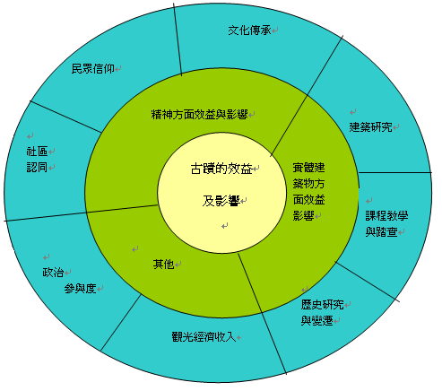
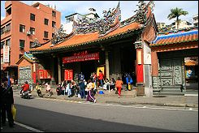
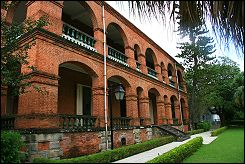

|
古蹟的效益與影響可以從三個分面來談及：其一是精神方面效益影響、其二是實體建築物方面效益影響及其三是其他方面，各又可細分為文化傳承、民眾信仰、社區認同方面；建築研究、歷史研究與變遷、課程教學與踏查
；經濟效益及政治參與度。以下列圖表呈現之（圖一） |
|  |
|
民國七十一年（西元1982）五月二十六日正式公布通過「文化資產保存法」
，將具有歷史、文化、藝術價值的古物、古蹟、民族藝術、民俗及有關文物和自然文化景觀等五項，界定為文化資產，分別訂定條文加以保護，為文化資產的保存，提供了具體的依循。文化資產保存法第3條第1款明確規定著「古蹟」的定義：古蹟、歷史建築、聚落乃指人類為生活需要所營建之具有歷史、文化價值之建造物及附屬設施群。而訂定文資法最主要的目的，乃是將歷代先民走過的生活足跡、承先啟後的文化演變、歷史的活教材完善的保存下來。 |
| 參考資料：文化資產保存法：參考網址law.moj.gov.tw/Scripts/newsdetail.asp?no=1H0170001 |
|
|
| 福佑宮淡水人最早的信仰 |
|  |
| 福佑宮淡水的區域發展中心 |
|  |
| 姑娘樓建築與文化的影響 |
| |
| |
|